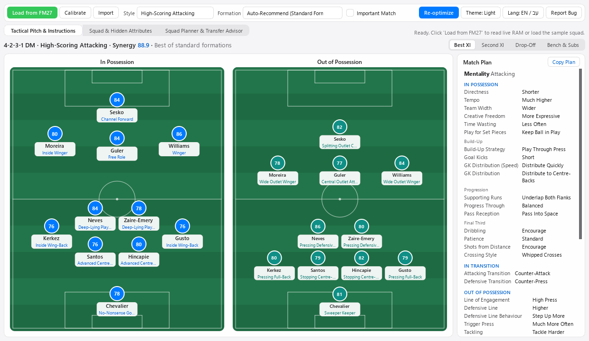
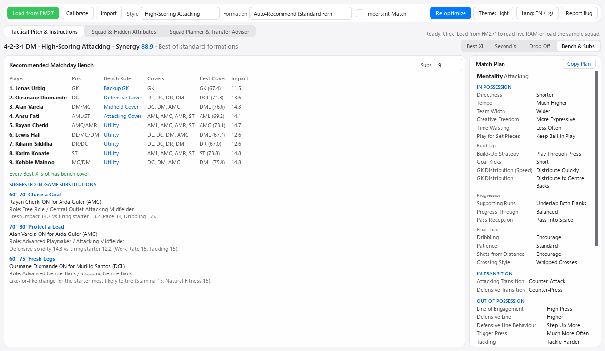
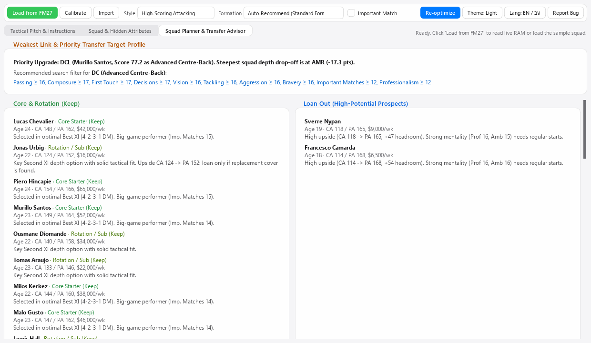
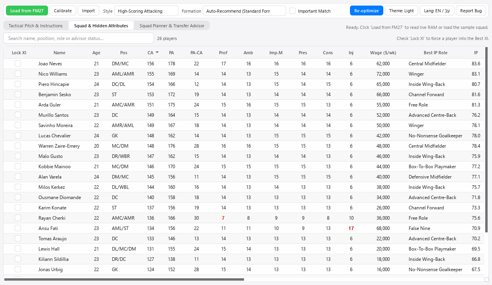
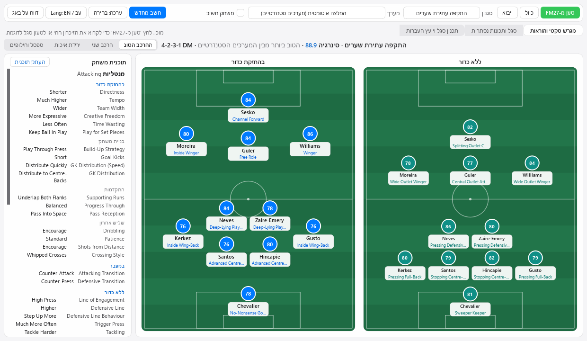

Best formation
Scores every supported formation against your players and picks the one they fit best – or lock your own and let Tacticfy fill it.
Free Windows app for Football Manager 27
Tacticfy reads your FM27 save and works out the best formation, In and Out of Possession roles, instructions, matchday bench and training plan – using the exact names you see in the game.
Windows 10 / 11 · 64-bit · No Python required · English & Hebrew

One click reads your squad. Tacticfy does the spreadsheet work so you can copy the plan straight into FM27.
Scores every supported formation against your players and picks the one they fit best – or lock your own and let Tacticfy fill it.
An In Possession and an Out of Possession role for every slot, using the official FM27 role names so they match the game 1:1.
Instruction tiles for your chosen style – from High-Scoring Attacking to Defensive Solidity – with the exact FM27 tile names. Copy the whole plan in one click.
A 7 or 9-man bench with a backup keeper and cover for every line, plus planned changes: chase a goal, protect a lead, fresh legs.
Role focus, additional focus and training intensity for each player, based on attribute gaps, age, potential, professionalism and injury risk.
Core, rotation, loan, sell-high and sell lists, plus the weakest link in your XI and a ready-made search filter for their replacement.
Light and dark themes, in English or Hebrew (right-to-left). Click a screenshot for full size.




Download TacticfySetup.exe and install it like any Windows app.
Start FM27, load your career and open the Squad screen.
Click Load from FM27, pick a style, and copy the plan into the game.
Windows SmartScreen may warn because the installer isn't code-signed – click More info → Run anyway.
Live reading depends on memory offsets for the current FM27 patch. When Sports Interactive ships an update, Load from FM27 can stop working until Tacticfy is updated. Whenever a new FM27 patch breaks live reading, an updated release is published on GitHub Releases – just install it over the old version. Until then you can still use Import with an FM squad export.
Yes. Tacticfy is free and its source code is on GitHub.
No. Tacticfy only reads the squad from FM27's memory while the game is running. It never writes to the game or your save files.
A new FM27 patch moved the data Tacticfy reads. Check Releases for an update, and report it with the Report Bug button if there isn't one yet.
It opens a GitHub issue in your browser, pre-filled with your Windows version, the Tacticfy version and the last 20 log lines. The log never contains player names or save data, and your Windows user name is removed. Nothing is sent until you submit the issue yourself.
English and Hebrew. Switch with the Lang: EN / עב button. FM27 role and instruction names always stay in English so they match the game.